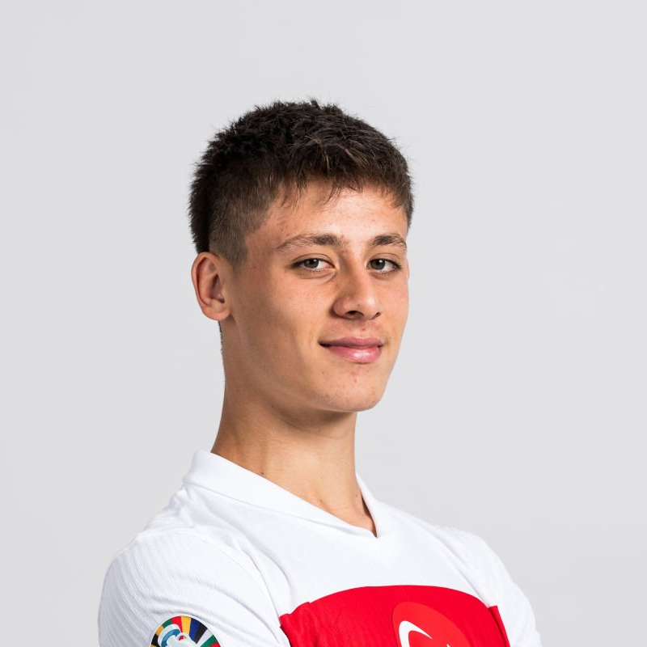

<link rel="preconnect" href="https://fonts.googleapis.com">
<link rel="preconnect" href="https://fonts.gstatic.com" crossorigin>
<link href="https://fonts.googleapis.com/css2?family=Josefin+Sans:ital,wght@0,100..700;1,100..700&display=swap" rel="stylesheet">

<main>
  <div class="card">
    <div class="profile">
      
    </div>
    <div class="fname">Arda Güler</div>
    <div class="footer">
      <div class="flag">
        
        <span>TUR</span>
      </div>
      <div class="age">
        Age: 19
      </div>
    </div>
  </div>
  <div class="card">
    <div class="profile">
      
    </div>
    <div class="fname">Cristiano Ronaldo</div>
    <div class="footer">
      <div class="flag">
        
        <span>POR</span>
      </div>
      <div class="age">
        Age: 39
      </div>
    </div>
  </div>
</main>

<style>
  * {
    box-sizing: border-box;
  }
  body {
    background: #293B47;
    display: flex;
    align-items: center;
    justify-content: center;
    font-family: "Josefin Sans", sans-serif;
  }

  main {
    background: url(bg.png);
    width: 950px;
    height: 520px;
    display: flex;
    align-items: center;
    justify-content: space-evenly;
    gap: 5rem;
    padding: 1rem 6rem;
    border: 3px solid white;
    border-radius: 6px;
  }

  main>div {
    flex: 1;
    height: 85%;
    border-radius: 1rem;
    padding: 1rem;
  }
  
  .card {
    color: white;
    display: flex;
    flex-direction: column;
    transition: all 1s ease-in;
  }

.card {
  border: 2px solid #fff2;
  backdrop-filter: blur(5px);
}

  .profile {
    width: 70%;
    border-radius: 50%;
    overflow: hidden;
    border: 5px solid white;
    margin: 1rem auto;
  }

  .profile>img {
    width: 100%;
  }

  .fname {
    text-align: center;
    font-size: 1.9rem;
    font-weight: 700;
    margin-top: 1rem;
    text-shadow: 1px 1px #000a;
  }

  .footer {
    margin-top: auto;
    display: flex;
    flex-direction: row;
    align-items: baseline;
    justify-content: space-between;
    font-size: 1.5rem;
    font-weight: 300;
  }

  .flag>img {
    transform: translateY(.5rem);
  }
</style>


<script>
  window.onclick = () => {
    document.querySelectorAll(".card").forEach(x => {
      x.classList.add("glass");
    });
  };
</script>